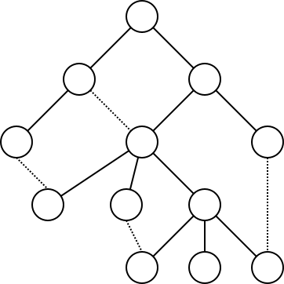
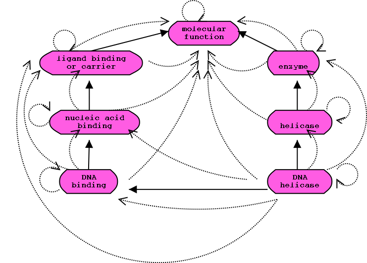

The GO Database Schema Modules are designed for housing any GO or OBO style ontology together with associated annotations and other auxhiliary data.
You can download the latest release of the MySQL Database from the GO Database Website, or you can build your own from the components here
You should already be familiar with the Gene Ontology project:
GO Database and Developers page:
You should also be familiar with relational databases and SQL. In particular, you should be familiar with MySQL. You should be able to use other RDBMSs if required, but currently MySQL is the only one supported.
Here is a good tutorial on relational databases:
You should already have MySQL installed. Obtain a copy of the GO database from the download area and import the MySQL dump.
The central concept in OBO style ontologies and in the GO database is the graph. The GO or OBO terms are nodes in the graph, and the relationships between them are arcs. This is handled by the tables term and term2term respectively.
A graph
An alternative view is that GO or OBO style ontologies consist of binary relationships, that is some kind of typed relationship between two entities.
Currently there are few relationship types in OBO ontologies (is_a, part_of, and develops_from in anatomical ontologies). This may change in the future - we may wish to have a large variety of relationship types, with some being specialisations of others. To support this, we store relationship types in the same table we use for storing terms. We differentiate these by the fact that they come from the relationship type ontology.
When performing ontology oriented queries, it is often necessary to do some kind of graph traversal. It is possible to use the term2term table to iterate through the graph, but this requires mutliple SQL calls. Most implementations of SQL do not support the kind of recursive querying required to answer queries such as find all DNA binding genes.
This kind of query is possible with the GO database however, because we precompute the path from every node to all of its ancestors (which is equivalent to computing the path from every node to all of its descendents). This is known as the transitive closure of a relationship. This goes in the graph_path table, which also holds the distance between terms.
In particular, we calculate the reflexive transitive closure, which means that every term is related to itself (the distance between the terms is zero). In practical terms, this makes it easier to write queries such as find all DNA binding genes - because such queries should return genes attached directly to DNA binding, as well as to children of DNA binding.
The diagram below shows an example of the reflexive transitive closure of DNA helicase and its ancestors. The dark lines indicate direct is_a relationships (stored in the term2term table); the dotted lines indicate the implied ancestral relationships (ie the closure), which is stored in the graph_path table. 
The GO database uses surrogate keys to link tables together. These keys have no meaning, and are different from accession numbers. For example, the term table has fields id and acc. The id field should be used for joining the tables, the acc field for storing the OBO accession.
The GO schema has a modular design. Hopefully this makes it easier to familiarize yourself with the schema. It should also make it easier to combine the GO db with existing database schemas. You can safely ignore modules you are not interested in, provided there are no other dependencies on this module
The links below go directly to the table creation SQL, which have comments embedded within them
You can browse the sql module directory here
You may wish to create an instance of the GO database with your own data in it -- for example, using a custom phenotype ontology, or adding your own gene associations.
You can either use a database obtained from the download area as a shell, or you can use the SQL DDL provided in the modules above. The SQL provided is in a RDBMS-neutral dialect, and will not work directly in MySQL. Use the conversion script provided; or use the go-manager.pl script
the load-go.pl script can be used to populate the database with a variety of data from standard GO/OBO flat files. To use this, you will need to install go-db-perl; see the instructions for more details
Once you have a local copy of the database, there are a number of ways to query it
There is a page of example queries to help you out.
The GO database design influenced the design of the GMOD/Chado controlled vocabulary and ontology module. We may decide to switch to the chado schema when we make the transition to AmiGO 2.0
We may switch to an underlying postgres database as opposed to MySQL. When the GO Database project was started in 2000, MySQL was clearly the only viable open source database, despite its many limitations. More recently, PostgreSQL improved dramatically and supplied many of the things that MySQL lacked - transactions, views, procedures, triggers, subselects. As of writing, MySQL is catching up with all these features one expects of a modern relational database. As yet, no final decision has been made as to whether to switch to PostgreSQL. We will never use a non-open source database, as we believe that the database should be available to as many users as possible
The GO project may make the transition to more advanced ontology formalisms, for example a description logic such as OWL, or a frame based system such as that used by Protege.
This is unlikely to affect the structure of the GO database, as the database is currently used purely for querying, not data management.
Currently the annotation model supported by GO and the GO database is a simple one of disjunctive annotations; that is, if a gene is annotated to GO function F and component C, it does not necessarily mean that function F is happening in component C - the roles could be completely seperate.
We may wish to allow for more complex terms such as this gene has function F during process P whilst in cellular component C. We may also want to allow slot-based annotations - for example, combining the terms from the function ontology with terms from the biochemical or protein ontology in constrained ways to make composite statements such as interleukin-18 biosynthesis
For the current proposal, please see the assoc_rel table in the go-associations module - more documentation to follow